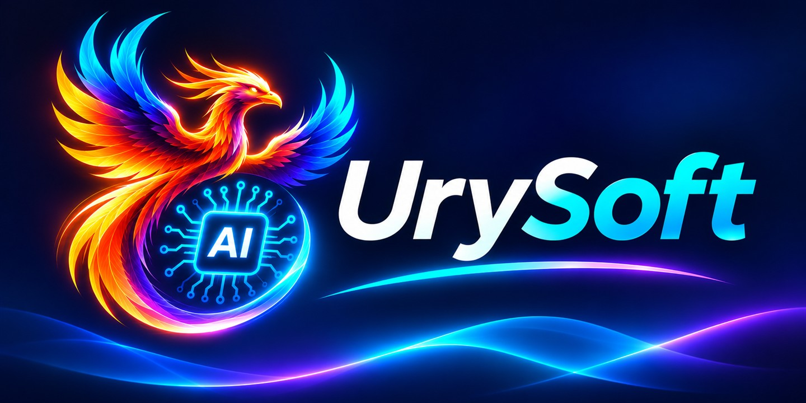

UrySoft · Identidad visual
Edición 13 noviembre 2026 · ES / CA / EN

Marca / Marca / Brand
Fénix unido al chip AI; nombre completo UrySoft separado del símbolo. Sin leyenda, nombre personal ni cargo en los recursos de marca. Los mensajes comerciales se traducen como texto de la web.
Original y adaptaciones
- urysoft-original-approved.png: archivo original intacto, fuente de verdad.
- urysoft-hero.jpg: versión optimizada 1440 × 720; misma composición.
- logo-horizontal-*.svg: contenedores SVG con imagen raster integrada, no vectorización. Oscuro: encuadre del original. Claro: presentación con marco claro y fondo azul conservado.
- icon-512.png / icon-192.png / favicon.png: recortes cuadrados del fénix y chip AI; tamaños 512, 192 y 32 px.
- icon-dark.svg / icon-light.svg: presentaciones del símbolo con el fondo original.
- icon-simplified-interpretation.svg: interpretación vectorial simplificada para tamaños pequeños. No reproduce el detalle original y no sustituye al arte aprobado.
Paleta / Paleta / Palette
Azul noche
#050B25Cian
#00DDEBVioleta
#8B5CF6Fuego
#FF9B00
Colores de interfaz elegidos para acompañar la imagen; el original conserva sus gradientes. Texto claro: #F1F5FF. Fondo claro: #F4F7FC. En fondos claros, usar cian como acento decorativo y azul oscuro para texto y botones.
Tipografía / Tipografia / Typography
Interfaz: system-ui, Segoe UI, sans-serif. El wordmark original es parte de la imagen; no se identifica ni sustituye su fuente. Títulos con peso 750–850 y texto con peso 400.
Uso / Ús / Usage
- Mantener proporciones. No deformar, recolorear ni separar el fénix del chip.
- Reserva recomendada: 8 % del ancho alrededor de cada recurso.
- Logo completo: ancho mínimo recomendado 180 px; para menos espacio, usar símbolo cuadrado. Hero: usar la imagen completa sin cortar el nombre.
- La variante clara conserva el panel azul para proteger el brillo y el contraste. No se entrega una extracción transparente del arte.
- El detalle del original pierde legibilidad a 16–32 px: se incluye una interpretación SVG alternativa claramente identificada, pendiente de aprobación como sustituto del favicon original.
- Perfil profesional y LinkedIn pertenecen a una sección independiente de la web.
Limitaciones / Limitacions / Limitations
The approved artwork is raster. SVG wrappers embed raster pixels; only the labeled simplified interpretation is a true vector. Light versions retain the navy artwork background. No claim of font identification, transparent extraction, trademark registration or legal clearance is made.
UrySoft